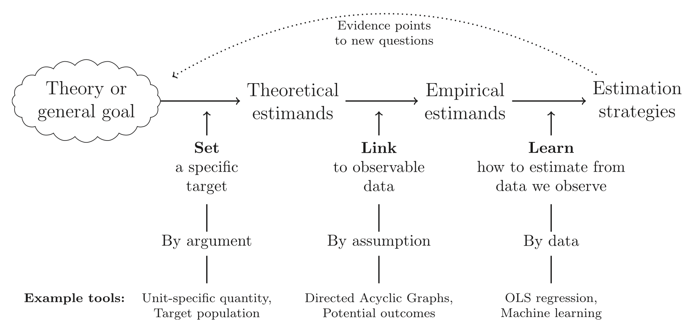

22 Estimandi teorici e estimandi empirici
- distinguere tra estimando teorico e estimando empirico;
- capire i benefici dell’utilizzo di estimandi chiaramente definiti.
- Leggere What Is Your Estimand? Defining the Target Quantity Connects Statistical Evidence to Theory di Lundberg et al. (2021).
22.1 Introduzione
Nei capitoli precedenti abbiamo illustrato diverse tecniche di analisi esplorativa dei dati, utili per sintetizzare ampie quantità di informazioni, rappresentare le distribuzioni delle variabili e descriverne le relazioni. Tuttavia, questi strumenti presuppongono che le variabili siano state misurate correttamente per rispondere a una specifica domanda teorica. È quindi cruciale interrogarsi sul legame tra le quantità che vogliamo stimare (estimandi) e la teoria che guida la ricerca.
Per approfondire questo aspetto, esamineremo l’articolo di Lundberg et al. (2021), What Is Your Estimand? Defining the Target Quantity Connects Statistical Evidence to Theory, che evidenzia l’importanza di definire con precisione l’estimando chiave di uno studio. Una chiara distinzione tra estimando teorico ed estimando empirico è essenziale per garantire che i risultati statistici siano interpretabili nel contesto della teoria sottostante.
22.2 Definizione di Estimando
In filosofia della scienza ed epistemologia, il concetto di estimando si riferisce alla quantità o proprietà che si intende stimare attraverso l’osservazione e l’inferenza. La distinzione tra estimando teorico ed estimando empirico è fondamentale per comprendere il processo di misurazione e inferenza in scienza, specialmente nelle scienze psicologiche, dove molte grandezze di interesse non sono direttamente osservabili.
22.2.1 Estimando Teorico
L’estimando teorico è la grandezza latente, concettuale o ipotetica che un modello teorico definisce come oggetto di interesse. Non è direttamente misurabile, ma può essere inferito tramite variabili osservabili. In psicologia, la maggior parte dei costrutti (intelligenza, ansia, personalità, autoefficacia, stati emotivi) rientra in questa categoria.
Esempio. Consideriamo il livello di ansia di tratto di un individuo (ossia la tendenza stabile di una persona a sentirsi ansiosa in diverse situazioni).
- L’ansia di tratto è un costrutto teorico, definito all’interno della teoria della personalità e della psicometria.
- Non possiamo osservare direttamente “l’ansia di tratto” in una persona, né esiste un singolo indicatore oggettivo che la rappresenti perfettamente.
- Per questo motivo, l’ansia di tratto è un estimando teorico: esiste nel nostro modello teorico della personalità, ma dobbiamo inferirlo indirettamente.
22.2.2 Estimando Empirico
L’estimando empirico è la stima quantitativa del costrutto teorico ottenuta attraverso dati osservabili. Si ottiene con strumenti di misurazione, come test psicometrici, scale di valutazione o registrazioni fisiologiche.
Esempio. Seguendo l’esempio dell’ansia di tratto, per stimarla possiamo usare lo State-Trait Anxiety Inventory (STAI-T), un questionario in cui i partecipanti rispondono a item come:
- “Mi sento spesso nervoso senza motivo apparente.”
- “Tendo a preoccuparmi molto anche per piccole cose.”
Le risposte vengono aggregate e trasformate in un punteggio, che funge da estimando empirico del costrutto di ansia di tratto.
- Questo punteggio è una proxy quantitativa dell’ansia di tratto.
- Tuttavia, non è l’ansia di tratto in sé, ma una stima basata su dati osservabili.
22.2.3 Differenza chiave tra estimando teorico ed empirico
| Aspetto | Estimando Teorico | Estimando Empirico |
|---|---|---|
| Definizione | Quantità latente, ipotetica o concettuale | Stima numerica basata su dati osservabili |
| Esempi | Intelligenza, ansia, personalità | Punteggi a test, risposte a questionari |
| Misurabilità | Non direttamente osservabile | Derivato da misurazioni indirette |
| Dipendenza dai dati | Definito teoricamente | Derivato da strumenti di misura |
22.2.4 Problemi e Sfide nella Stima degli Estimandi
L’uso di estimandi empirici per inferire estimandi teorici presenta diverse sfide epistemologiche:
- Validità della Misura:
- Quanto bene l’estimando empirico riflette l’estimando teorico?
- Il test STAI-T misura davvero l’ansia di tratto o cattura solo una componente superficiale dell’ansia?
- Misure fisiologiche (ad esempio, livelli di cortisolo o conduttanza cutanea) potrebbero fornire un’altra proxy dell’ansia, ma con un’interpretazione diversa.
- Quanto bene l’estimando empirico riflette l’estimando teorico?
- Affidabilità della Misura:
- Il punteggio del questionario è stabile nel tempo?
- Lo stesso soggetto ottiene risultati simili se risponde in momenti diversi?
- Il punteggio del questionario è stabile nel tempo?
- Distorsione e Errori di Misura:
- Gli stimoli del questionario possono influenzare le risposte?
- I soggetti rispondono onestamente o sono influenzati da desiderabilità sociale?
- Gli stimoli del questionario possono influenzare le risposte?
- Modelli Latenti e Inferenza Bayesiana:
- Nella modellizzazione statistica, stimiamo parametri latenti (estimandi teorici) usando dati osservati (estimandi empirici).
- Approcci come la modellazione a equazioni strutturali (SEM) o i modelli bayesiani a variabili latenti sono strumenti per inferire estimandi teorici da dati empirici.
- Nella modellizzazione statistica, stimiamo parametri latenti (estimandi teorici) usando dati osservati (estimandi empirici).
22.2.5 Esempio di Formalizzazione con un Modello Latente
Se vogliamo modellare l’ansia di tratto (\(\theta\)) come una variabile latente, possiamo formalizzarla in termini di un modello a variabili latenti:
\[ y_i = \lambda_i \theta + \epsilon_i , \]
dove:
- \(y_i\) sono le risposte osservabili ai singoli item del questionario (estimandi empirici).
- \(\theta\) è il livello latente di ansia di tratto (estimando teorico).
- \(\lambda_i\) sono i pesi di ciascun item (loading fattoriali).
- \(\epsilon_i\) rappresenta l’errore di misurazione.
In conclusione, la distinzione tra estimando teorico ed estimando empirico è fondamentale in psicologia, perché i costrutti psicologici sono generalmente latenti e non direttamente misurabili. Per questo, il processo di misurazione si basa su inferenze statistiche e modelli teorici. L’uso di strumenti psicometrici è essenziale per ottenere stime empiriche, ma queste devono essere interpretate con cautela, considerando sempre la validità e l’affidabilità della misura.
In definitiva, la psicologia si basa su un continuo dialogo tra teoria ed empiria:
- Gli estimandi teorici definiscono i concetti di interesse.
- Gli estimandi empirici sono le proxy numeriche usate per inferire tali concetti.
- Il successo dell’inferenza dipende dalla qualità delle misurazioni e dei modelli adottati.
Questo è uno dei motivi per cui la psicometria e la modellizzazione statistica sono discipline fondamentali per la ricerca psicologica.
22.3 Il Framework di Lundberg et al. (2021)
Lundberg et al. (2021) autori suggeriscono un approccio metodologico in tre fasi:
- Definire un estimando teorico, collegato esplicitamente alla teoria che guida la ricerca.
- Tradurre l’estimando teorico in un estimando empirico, cioè una misura concreta, ottenuta dai dati osservabili, che richiede l’adozione di specifiche assunzioni di identificazione.
- Stimare l’estimando empirico utilizzando procedure statistiche appropriate, in modo da ricavare inferenze solide a partire dai dati.
Questo approccio consente di chiarire come le informazioni ottenute dai dati rispondano a una ben precisa domanda teorica. In breve, Lundberg et al. (2021) invitano i ricercatori a definire l’estimando teorico in modo indipendente dai modelli statistici impiegati, così da evidenziare il nesso logico fra teoria ed evidenza empirica.
In altre parole, non basta limitarsi a verificare se un coefficiente di regressione è “significativamente diverso da zero” basandosi solo sul modello statistico. È necessario distinguere l’obiettivo teorico della ricerca (ad esempio, studiare l’apprendimento associativo) dal modo in cui questo obiettivo viene tradotto in una misura osservabile.
Un esempio concreto è fornito dal modello di Rescorla-Wagner, applicato a compiti di Probabilistic Reversal Learning (PRL): l’estimando empirico potrebbe corrispondere a parametri come il tasso di apprendimento \(\alpha\) o la temperatura inversa \(\beta\). Questi parametri riflettono quanto i partecipanti modifichino i valori associati agli stimoli o regolino la strategia di scelta (esplorazione rispetto a sfruttamento).
È importante notare che l’estimando empirico può essere stimato in modi diversi, utilizzando modelli, metodi di stima e disegni sperimentali vari. Il modello di Rescorla-Wagner è solo una possibile rappresentazione dell’apprendimento associativo, e i suoi parametri possono essere ricavati con procedure differenti. Di conseguenza, il valore numerico che descrive la capacità di apprendimento associativo dipende dal modello, dalla tecnica di stima e dal contesto sperimentale.
In conclusione, Lundberg et al. (2021) sottolineano l’importanza di definire l’estimando teorico prima di qualsiasi analisi, e di giustificare in modo chiaro la scelta dello specifico estimando empirico e della strategia di stima adottata. Così facendo, si evidenzia il legame tra teoria e dati, rendendo più trasparenti, coerenti e riproducibili i processi di inferenza statistica.
22.4 Limiti dell’Approccio Attuale
Lundberg et al. (2021) osservano che spesso i ricercatori sociali omettono il passaggio cruciale della definizione dell’estimando, concentrandosi direttamente sui dati e sulle procedure statistiche. Questo approccio può causare una mancanza di chiarezza riguardo a ciò che si intende effettivamente stimare, limitando anche l’uso di modelli statistici alternativi che potrebbero essere più adatti a rispondere alla domanda di ricerca. Sebbene Lundberg et al. (2021) facciano riferimento alla letteratura sociologica, questi stessi argomenti sono applicabili anche alla psicologia.
Il problema del collegamento tra estimandi teorici ed empirici (si veda la figura seguente) può essere illustrato con un esempio in psicologia riguardante l’intelligenza. La distinzione tra estimandi teorici ed empirici è cruciale: gli estimandi teorici possono includere quantità non osservabili, come i costrutti latenti, ad esempio l’intelligenza come concetto astratto. Gli estimandi empirici, invece, riguardano esclusivamente dati osservabili, come i punteggi ottenuti in un test di intelligenza.
Nel caso dell’intelligenza, la scelta dell’estimando teorico richiede un’argomentazione sostanziale riguardo alla teoria dell’intelligenza adottata e agli obiettivi della ricerca. Ad esempio, se si vuole studiare l’intelligenza generale (fattore \(g\)), bisogna chiarire come questo costrutto viene teoricamente definito e perché è rilevante per lo studio.
D’altra parte, la scelta dell’estimando empirico richiede un’argomentazione concettuale su come i dati osservabili, come i risultati dei test di intelligenza, possano rappresentare il costrutto latente di interesse. È necessario spiegare quali dati vengono utilizzati per inferire il costrutto teorico e quali assunzioni si fanno riguardo al rapporto tra le misure osservate e il costrutto latente.
Infine, la scelta delle strategie di stima, come l’uso di modelli di equazioni strutturali per stimare l’intelligenza generale da diversi test, è una decisione separata, che può essere in parte guidata dai dati disponibili e dalle caratteristiche della misurazione. Separare chiaramente questi passaggi aiuta i ricercatori a fare scelte informate e fondate, consente ai lettori di valutare in modo critico le affermazioni fatte e permette alla comunità scientifica di costruire su basi solide per futuri sviluppi della ricerca.

22.5 Definizione dell’Estimando Teorico e il Ruolo dei DAG
Definire l’estimando teorico è cruciale per determinare la natura dello studio. L’estimando teorico può avere scopi descrittivi, predittivi o causali. I Grafici Aciclici Diretti (DAG) sono strumenti visivi utili per rappresentare relazioni tra variabili e identificare confondenti che potrebbero influenzare le inferenze. Essi:
- Chiarificano le relazioni causali tra le variabili.
- Identificano le variabili confondenti da controllare.
- Guidano la costruzione del disegno di ricerca per minimizzare i bias.
- Supportano la scelta delle strategie di stima per ottenere inferenze più valide.
Utilizzare i DAG aiuta i ricercatori a garantire che gli estimandi teorici siano ben definiti e le inferenze tratte dai dati siano affidabili.
22.6 Riflessioni Conclusive
La distinzione tra estimando teorico ed empirico è cruciale per garantire la validità delle inferenze statistiche. Un framework ben strutturato aiuta a:
- definire chiaramente il problema di ricerca;
- garantire la coerenza tra teoria e dati;
- migliorare la replicabilità degli studi.
L’articolo di Lundberg et al. (2021) sottolinea l’importanza di una chiara definizione degli estimandi prima dell’analisi statistica, favorendo un approccio più trasparente e rigoroso alla ricerca quantitativa. Questo metodo non solo migliora la qualità delle inferenze scientifiche, ma facilita anche il confronto tra studi diversi, contribuendo alla costruzione di una conoscenza cumulativa più solida e affidabile.